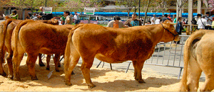
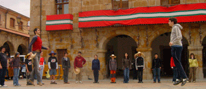
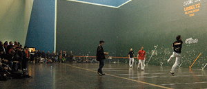

|
 |
| MAIATZAK 4 MAYO | |
9:30 |
VI. Herriko Ganadu feria Latxartegi Parkean 13:30ak arte.  |
10:00 |
Legazpiko V. Haurren Pilota Txapelketako Finalak Urbeltz Pilotalekuan. |
11:30 |
Legazpiko Trikitilarien trikiti-jira. Hiru taldetan banatuta abiatuko dira Bikuñaenea
plazatik, San Ignazio auzotik eta Laubide kaletik, Latxartegi parkean elkartu eta ondoren
erdiguneko kaleetan zehar ibiliko dira. |
12:00 |
Kapela Dantza herrikoia Euskal Herria plazan, Sustraiak dantza taldeak sustaturik. Ondoren herriko kale eta tabernetan ibiliko dira egun guztian..  Kapela Dantza Popular en Euskal Herria plaza, promovida por Sustraiak dantza taldea. A continuación seguirán durante todo el día en las calles y bares de la localidad. |
12:30 |
Sagardo Festa Kale Nagusiko taxien bidegurutzean. Euria balitz Euskal Herria plazako
arkupean. |
13:00 |
Altsasuko Trasteando eta Alaitasuna Errondailaren emanaldia Latxartegi Aretoan. |
14:30 |
Koadrila bazkaria Euskal Herria plazan, LGAk sustaturik. Ohi bezala bakoitzak berea
eraman beharko du. Eguraldi txarra balitz Azokan. |
16:00 |
Herri mailako plater tiraketa Urtazar Tiro zelaian, Club de Tiro Olinpiko Urtazar elkarteak antolaturik. |
17:00 |
Binakako VII Pilota Txapelketa Herrikoiaren finalak Urbeltz Pilotalekuan.  |
19:30 |
Zaldi erakustaldia Kale Nagusian, herriko zaldunen eskutik. |
23:00 |
Punk-Ska-Reggae Fest Euskal Herria plazan: “Roy Ellis & Transilvanians”, “Skarface” eta
“Kaleko Urdangak”, LGAk sustaturik. |
 |
| KONTZERTUAREN ONDOREN ETA FESTAREKIN JARRAITZEKO, SKA DJ-AK GAZTETXEAN |